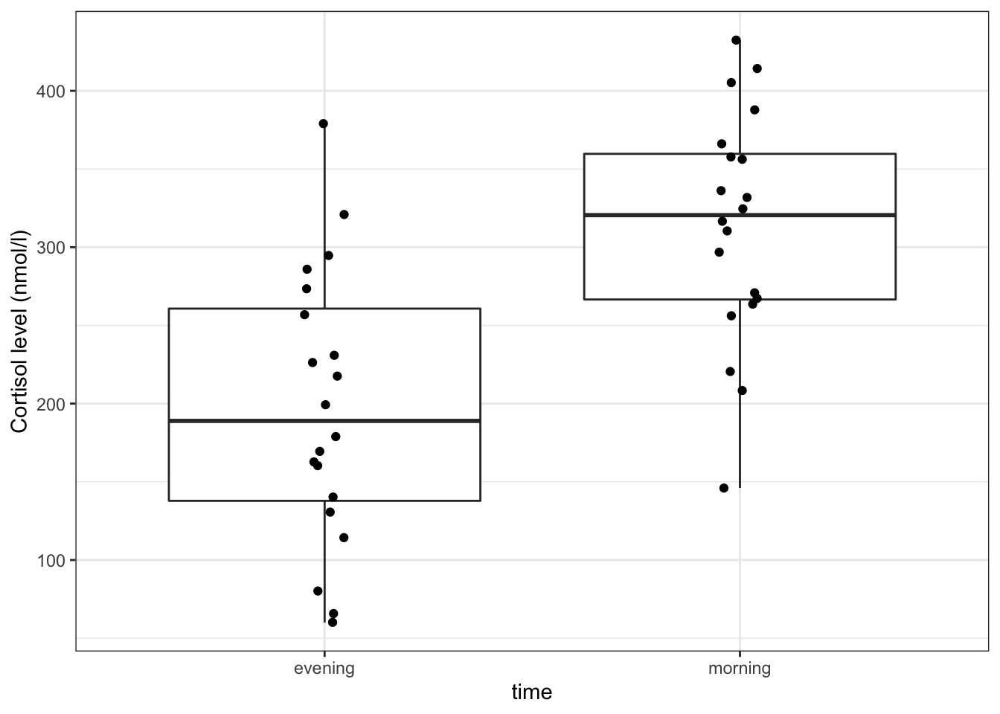

Paired t-test
A paired t-test is used when we have two samples of continuous data that can be paired (examples of these sort of data would be weights of individuals before and after a diet). This test is applicable if the number of paired points within the samples is large (>30) or, if the number of points is small, then this test also works when the parent distributions are normally distributed.
Libraries and functions
| Libraries | Description |
|---|---|
library(tidyverse) |
A collection of R packages designed for data science |
library(rstatix) |
Converts base R stats functions to a tidyverse-friendly format. Also contains extra functionality that we’ll use. |
| Functions | Description |
|---|---|
rstatix::t_test() |
Performs a one-sample t-test, Student’s t-test and Welch’s t-test in later sections. |
rstatix::shapiro_test() |
Performs a Shapiro-Wilk test for normality. |
ggplot2::stat_qq() |
Plots a Q-Q plot for comparison with a normal distribution. |
ggplot2::stat_qq_line() |
Adds a comparison line to the Q-Q plot. |
ggplot2::geom_jitter() |
Plots jittered points by adding a small amount of random variation to each point, to handle overplotting |
tidyr::pivot_wider() |
“Widens” the data, increasing the number of columns |
| Function | Description |
|---|---|
stats::reshape |
Reshapes a data frame from ‘long’ to ‘wide’ and vice versa |
t.test() |
Performs a one-sample t-test, Student’s t-test and Welch’s t-test in later sections. |
qqnorm() |
Plots a Q-Q plot for comparison with a normal distribution. |
qqline() |
Adds a comparison line to the Q-Q plot. |
shapiro.test() |
Performs a Shapiro-Wilk test for normality. |
| Libraries | Description |
|---|---|
plotnine |
The Python equivalent of ggplot2. |
pandas |
A Python data analysis and manipulation tool. |
scipy.stats |
A Python module containing statistical functions. |
| Functions | Description |
|---|---|
pandas.DataFrame.read_csv |
Reads in a .csv file |
pandas.DataFrame.pivot() |
Return reshaped DataFrame organised by given index / column values. |
scipy.stats.shapiro() |
Performs the Shapiro-Wilk test |
plotnine.stats.stat_qq() |
Plots a Q-Q plot for comparison with a normal distribution. |
plotnine.stats.stat_qq_line() |
Adds a comparison line to the Q-Q plot. |
Data and hypotheses
For example, suppose we measure the cortisol levels in 20 adult females (nmol/l) first thing in the morning and again in the evening. We want to test whether the cortisol levels differs between the two measurement times. We will initially form the following null and alternative hypotheses:
- \(H_0\): There is no difference in cortisol level between times (\(\mu M = \mu E\))
- \(H_1\): There is a difference in cortisol levels between times (\(\mu M \neq \mu E\))
We use a two-sample, two-tailed paired t-test to see if we can reject the null hypothesis.
- We use a two-sample test because we now have two samples
- We use a two-tailed t-test because we want to know if our data suggest that the true (population) means are different from one another rather than that one mean is specifically bigger or smaller than the other
- We use a paired test because each data point in the first sample can be linked to another data point in the second sample by a connecting factor
- We’re using a t-test because we’re assuming that the parent populations are normal and have equal variance (We’ll check this in a bit)
The data are stored in a tidy format in the file data/CS1-twopaired.csv.
# load the data
cortisol <- read_csv("data/CS1-twopaired.csv")Rows: 40 Columns: 3
── Column specification ────────────────────────────────────────────────────────
Delimiter: ","
chr (1): time
dbl (2): patient_id, cortisol
ℹ Use `spec()` to retrieve the full column specification for this data.
ℹ Specify the column types or set `show_col_types = FALSE` to quiet this message.# have a look at the data
cortisol# A tibble: 40 × 3
patient_id time cortisol
<dbl> <chr> <dbl>
1 1 morning 311.
2 2 morning 146.
3 3 morning 297
4 4 morning 271.
5 5 morning 268.
6 6 morning 264.
7 7 morning 358.
8 8 morning 316.
9 9 morning 336.
10 10 morning 221.
# … with 30 more rows# load the data
cortisol_r <- read.csv("data/CS1-twopaired.csv")
head(cortisol_r) patient_id time cortisol
1 1 morning 310.6
2 2 morning 146.1
3 3 morning 297.0
4 4 morning 270.9
5 5 morning 267.5
6 6 morning 263.8# load the data
cortisol_py = pd.read_csv('data/CS1-twopaired.csv')
# inspect the data
cortisol_py.head() patient_id time cortisol
0 1 morning 310.6
1 2 morning 146.1
2 3 morning 297.0
3 4 morning 270.9
4 5 morning 267.5We can see that the data frame consists of three columns:
patient_id, a unique ID for each patienttimewhen the cortisol level was measuredcortisol, which contains the measured value.
For each patient_id there are two measurements: one in the morning and one in the afternoon.
Summarise and visualise
It’s always a good idea to visualise your data, so let’s do that.
# create a boxplot
cortisol %>%
ggplot(aes(x = time, y = cortisol)) +
geom_boxplot() +
geom_jitter(width = 0.05) +
ylab("Cortisol level (nmol/l)")
Here we use also visualise the actual data points, to get a sense of how these data are spread out. To avoid overlapping the data points (try using geom_point() instead of geom_jitter()), we jitter the data points. What geom_jitter() does is add a small amount of variation to each point.
# create a boxplot
boxplot(cortisol ~ time,
data = cortisol_r)
(
ggplot(cortisol_py,
aes(x = "time",
y = "cortisol"))
+ geom_boxplot()
+ geom_jitter(width = 0.05)
+ ylab("Cortisol level (nmol/l)")
)
However, this plot does not capture how the cortisol level of each individual subject has changed though. We can explore the individual changes between morning and evening by looking at the differences between the two times of measurement for each patient.
To do this, we need to put our data into a wide format, so we can calculate the change in cortisol level for each patient.
In tidyverse we can use the pivot_wider() function.
# calculate the difference between evening and morning values
cortisol_diff <- cortisol %>%
pivot_wider(names_from = time, values_from = cortisol) %>%
mutate(cortisol_change = evening - morning)
cortisol_diff# A tibble: 20 × 4
patient_id morning evening cortisol_change
<dbl> <dbl> <dbl> <dbl>
1 1 311. 273. -37.4
2 2 146. 65.7 -80.4
3 3 297 257. -40.4
4 4 271. 321 50.1
5 5 268. 80.3 -187.
6 6 264. 379. 116.
7 7 358. 163. -195.
8 8 316. 294. -22
9 9 336. 140. -196.
10 10 221. 231. 10.4
11 11 366 131. -235.
12 12 256. 114. -142.
13 13 432. 217. -215.
14 14 208. 60.1 -148.
15 15 324. 199. -125.
16 16 388. 170. -218.
17 17 332 160. -172.
18 18 414. 179. -235.
19 19 405. 286 -119.
20 20 356. 226. -130. After this we can plot our data:
# plot the data
ggplot(cortisol_diff, aes(y = cortisol_change)) +
geom_boxplot() +
ylab("Change in cortisol (nmol/l)")
The differences in cortisol levels appear to be very much less than zero, meaning that the evening cortisol levels appear to be much lower than the morning ones. As such we would expect that the test would give a pretty significant result.
An alternative representation would be to plot the data points for both evening and morning and connect them by patient:
# plot cortisol levels by patient
cortisol %>%
ggplot(aes(x = time,
y = cortisol,
group = patient_id)) +
geom_point() +
geom_line()
This gives a similar picture to what the boxplot was telling us, that for most patients the cortisol levels are higher in the morning than in the evening.
cortisol_diff_r <- reshape(cortisol_r,
idvar = "patient_id",
timevar = "time",
direction = "wide")
# add new column with difference
cortisol_diff_r$cortisol_change <- cortisol_diff_r$cortisol.evening - cortisol_diff_r$cortisol.morning
head(cortisol_diff_r) patient_id cortisol.morning cortisol.evening cortisol_change
1 1 310.6 273.2 -37.4
2 2 146.1 65.7 -80.4
3 3 297.0 256.6 -40.4
4 4 270.9 321.0 50.1
5 5 267.5 80.3 -187.2
6 6 263.8 379.3 115.5After this we can plot our data:
boxplot(cortisol_diff_r$cortisol_change)
The differences in cortisol levels appear to be very much less than zero, meaning that the evening cortisol levels appear to be much lower than the morning ones. As such we would expect that the test would give a pretty significant result.
An alternative representation would be to plot the data points for both evening and morning and connect them by patient:
matplot(t(cortisol_diff_r[ , 2:3]),
pch = 1,
type = c("b"),
col = 1:20)
As far as I am aware of, there isn’t a straightforward method of plotting paired data using the base R functionality. Hence the data gymnastics:
- the default
plot()function doesn’t support this - the standardmatplot()function does - the
tfunction transposes the data, and I’m only selecting the second and third columns ([ , 2:3]) which contain the paired morning/evening measurements. - to group (pair) the data, we’re using colours, one for each of the 20 patients (
col = 1:20)
This gives a similar picture to what the boxplot was telling us, that for most patients the cortisol levels are higher in the morning than in the evening.
# reformat the data into a 'wide' format
cortisol_diff_py = pd.pivot(cortisol_py, index = "patient_id", columns = "time", values = "cortisol")
# add a new column with difference between
# evening and morning cortisol levels
cortisol_diff_py["cortisol_change"] = cortisol_diff_py["evening"].subtract(cortisol_diff_py["morning"])
# have a look at the format
cortisol_diff_py.head()time evening morning cortisol_change
patient_id
1 273.2 310.6 -37.4
2 65.7 146.1 -80.4
3 256.6 297.0 -40.4
4 321.0 270.9 50.1
5 80.3 267.5 -187.2After this we can plot our data:
# plot the data
(
ggplot(cortisol_diff_py, aes(x = "1", y = "cortisol_change"))
+ geom_boxplot()
+ ylab("Change in cortisol (nmol/l)")
)
The differences in cortisol levels appear to be very much less than zero, meaning that the evening cortisol levels appear to be much lower than the morning ones. As such we would expect that the test would give a pretty significant result.
An alternative representation would be to plot the data points for both evening and morning and connect them by patient:
# plot cortisol levels by patient
(
ggplot(cortisol_py,
aes(x = "time",
y = "cortisol",
group = "patient_id"))
+ geom_point()
+ geom_line()
)
This gives a similar picture to what the boxplot was telling us, that for most patients the cortisol levels are higher in the morning than in the evening.
Assumptions
You will do this in the exercise!
Implement and interpret the test
Perform a two-sample, two-tailed, paired t-test:
# perform the test
cortisol %>%
t_test(cortisol ~ time,
alternative = "two.sided",
paired = TRUE)- The first argument gives the formula
- The second argument gives the type of alternative hypothesis and must be one of
two.sided,greaterorless - The third argument says that the data are paired
t.test(cortisol ~ time,
alternative = "two.sided",
paired = TRUE,
data = cortisol_r)
Paired t-test
data: cortisol by time
t = -5.1833, df = 19, p-value = 5.288e-05
alternative hypothesis: true mean difference is not equal to 0
95 percent confidence interval:
-162.96038 -69.20962
sample estimates:
mean difference
-116.085 - The first two arguments define the formula
- The third argument gives the type of alternative hypothesis and must be one of
two.sided,greaterorless - The fourth argument says that the data are paired
From our perspective the value of interested is in the p column (p-value = 5.29 \(\times\) 10-5). Given that this is substantially less than 0.05 we can reject the null hypothesis and state:
Python has a dedicated function for testing the null hypothesis that two related or repeated samples have identical average (expected) values: stats.ttest_rel().
stats.ttest_rel(cortisol_diff_py["evening"],
cortisol_diff_py["morning"],
alternative = "two-sided")Ttest_relResult(statistic=-5.183290089830781, pvalue=5.288037286955356e-05)Since the p-value = 5.29 \(\times\) 10-5) and thus substantially less than 0.05 we can reject the null hypothesis and state:
A two-tailed, paired t-test indicated that the average cortisol level in adult females differed significantly between the morning (313.5 nmol/l) and the evening (197.4 nmol/l) (t = -5.2, df = 19, p = 5.3 * 10-5).
Exercise: Assumptions
Check the assumptions necessary for this this paired t-test. Was a paired t-test an appropriate test?
A paired test is really just a one-sample test in disguise. We actually don’t care too much about the distributions of the individual groups. Instead we care about the properties of the differences. So for a paired t-test to be valid for this data set, we need the differences between the morning and evening values to be normally distributed.
Let’s check this with the Shapiro-Wilk test and Q-Q plots, using the wide data frames we created earlier.
Perform Shapiro-Wilk test:
# perform Shapiro-Wilk test on cortisol differences
cortisol_diff %>%
shapiro_test(cortisol_change)# A tibble: 1 × 3
variable statistic p
<chr> <dbl> <dbl>
1 cortisol_change 0.924 0.116Create Q-Q plot:
# create the Q-Q plot
cortisol_diff %>%
ggplot(aes(sample = cortisol_change)) +
stat_qq() +
stat_qq_line(colour = "red")
Perform Shapiro-Wilk test:
# perform Shapiro-Wilk test on cortisol differences
shapiro.test(cortisol_diff_r$cortisol_change)
Shapiro-Wilk normality test
data: cortisol_diff_r$cortisol_change
W = 0.92362, p-value = 0.1164Create Q-Q plot:
qqnorm(cortisol_diff_r$cortisol_change)
qqline(cortisol_diff_r$cortisol_change, col = "red")
Perform Shapiro-Wilk test:
# perform Shapiro-Wilk test on cortisol differences
stats.shapiro(cortisol_diff_py["cortisol_change"])ShapiroResult(statistic=0.9236220121383667, pvalue=0.11635485291481018)Create Q-Q plot:
# create the Q-Q plot
(
ggplot(cortisol_diff_py,
aes(sample = "cortisol_change"))
+ stat_qq()
+ stat_qq_line(colour = "red")
)
The Shapiro-Wilk test says that the data are normal enough and whilst the Q-Q plot is mostly fine, there is some suggestion of snaking at the bottom left. I’m actually OK with this because the suggestion of snaking is actually only due to a single point (the last point on the left). If you cover that point up with your thumb (or finger of your choice) then the remaining points in the Q-Q plot look pretty darn good, and so the suggestion of snaking is actually driven by only a single point (which can happen by chance). As such I’m happy that the assumption of normality is well-met in this case. This single point check is a useful thing to remember when assessing diagnostic plots.
So, yep, a paired t-test is appropriate for this data set.